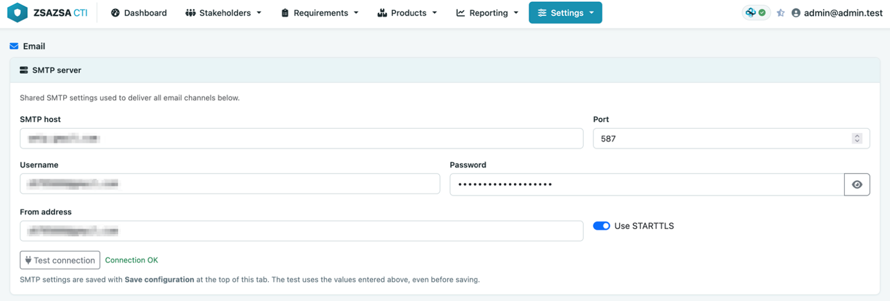
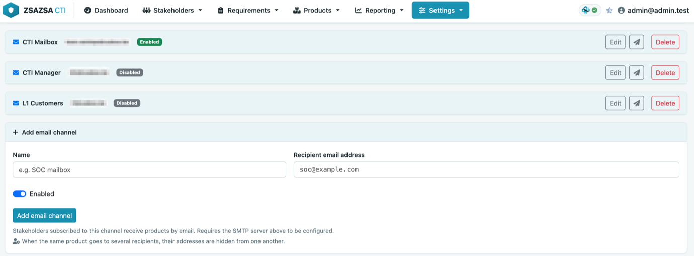
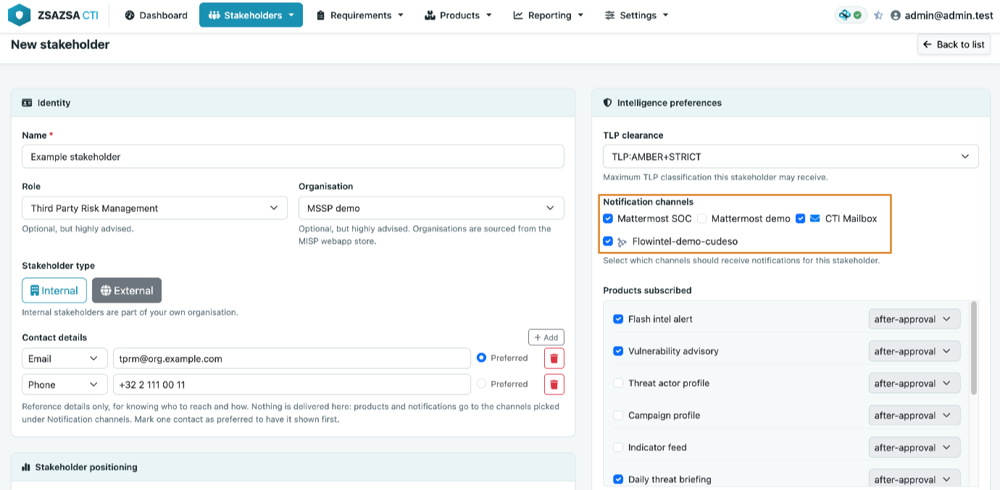
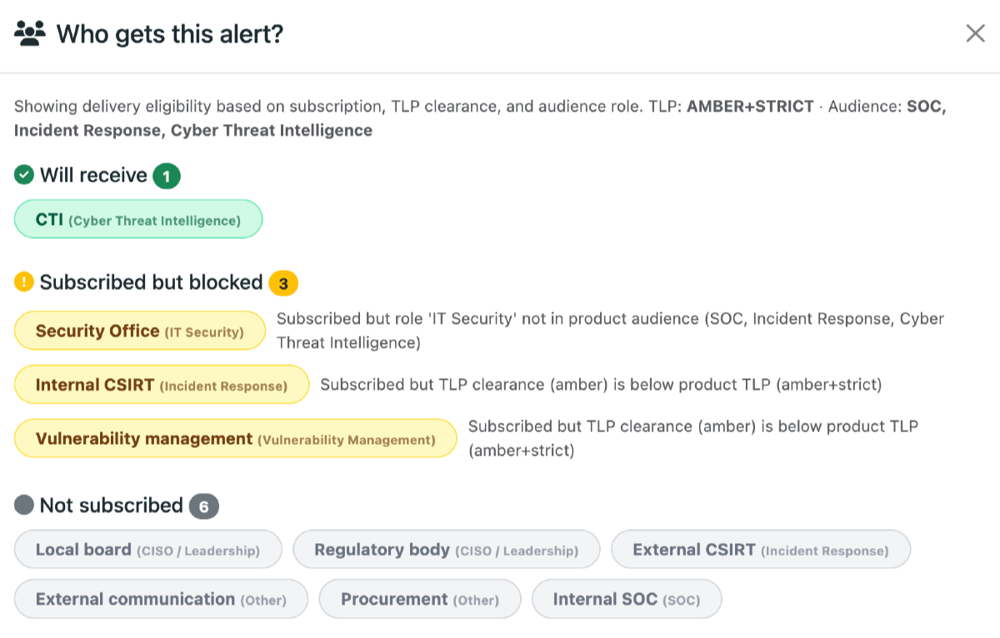

Several people testing zsazsa have arrived at the same question: the email notification mechanism works, but the model behind it is not obvious. The most common assumption is that you need one email channel per stakeholder. You do not, and this post explains what the design actually is, why it looks the way it does, and how to set it up for a real organisation.
The core idea: channels are destinations, stakeholders are people
A notification channel defines where a product is delivered. For Mattermost, this is a webhook URL. For email, it is a recipient address, which can be an individual mailbox, a shared mailbox or a mailing list.
A stakeholder represents a person or a function within your organisation. Their role, TLP clearance and product subscriptions determine whether they should receive a product. The stakeholder record itself does not contain an email address or other delivery details.
This separation makes the setup more flexible. The same stakeholder can receive products through both email and Mattermost without being created twice. Similarly, a shared mailbox used by eight analysts only needs to be configured once.
Step 1: configure the mail server once
Email delivery has two parts: the SMTP server used to send messages and the channels that define the recipients. The SMTP settings are configured once and shared by all email channels.

Under Configuration, Notifications, enter the SMTP host, port, STARTTLS settings, credentials and From address. zsazsa uses one SMTP configuration per instance. All products are therefore sent through the same mail server and use the same From address. Each email channel only contains a recipient address.
If you have a dedicated account for distributing intelligence products, enter its address in the From field.
Before continuing, use the Test connection button. This opens a connection to the SMTP server and authenticates without sending an email. It lets you confirm that the server and credentials are correct before configuring any channels or stakeholders.
Step 2: create channels for actual destinations
A channel represents an address, not a person. Think of it as a letterbox: zsazsa delivers the message to the address, while your mail system determines who can read it. A Mattermost channel follows the same principle: it is a shared destination monitored by one or more people.
This also introduces an important limitation: everyone with access to a shared mailbox or channel can read everything delivered to it. We will return to this later.

Create one email channel for each mailbox or mailing list in your mail system, rather than for each stakeholder. For example, a SOC distribution list is one channel and a shared management mailbox is another. If someone needs to receive products through their personal mailbox, create a separate channel for that address.
Each channel also has a Test connection button that sends an actual message to its recipient. Use it to confirm that delivery works before linking the channel to any stakeholders.
Step 3: subscribe stakeholders to channels
Under Stakeholder management, each stakeholder can subscribe to one or more channels. Every enabled channel is available to every stakeholder. The channel list is a shared pool: subscribing a stakeholder to a channel does not reserve that channel for them. It is normal for several stakeholders to use the same channel.

The same form also contains the stakeholder’s contact details, such as their email address, phone number, or Teams or Mattermost handle. These details are only there as contact information. The notification system does not use them to deliver products.
Products are always sent to the address configured on the channel. Adding an email address to a stakeholder record does not subscribe them to email notifications. Similarly, leaving this field empty does not prevent them from receiving products through a channel.
For example, ten stakeholders can all subscribe to a channel linked to your soc@ distribution list. This is how shared delivery is intended to work.
Step 4: understand how a product finds its recipients
This is an important part of the workflow. When you publish a product, zsazsa does not start with the channels. It starts with the stakeholders. A stakeholder is eligible to receive a product when:
- they are subscribed to that product type;
- their TLP clearance is high enough for the product’s TLP; and
- their role is included in the product’s audience.
The daily briefing is an exception because it has no defined audience. For this product type, only the subscription and TLP clearance checks apply.
Once the eligible stakeholders have been identified, zsazsa collects their subscribed channels. Disabled channels are ignored. The remaining channels are grouped by type, and duplicate email addresses are removed.
This means that if ten stakeholders use the same mailing list, zsazsa sends one email to that address. If three stakeholders use three different mailboxes, one email is sent to all three addresses, with the recipients hidden from one another.
Step 5: check before you publish
All products, except the daily threat briefing have a recipient preview. It lists every stakeholder in the system under three headings:
- Will receive: subscribed, cleared for the product's TLP, and in its audience;
- Subscribed but blocked: either their TLP clearance is too low or their role is not in the audience. The reason is shown next to the name; and
- Not subscribed: not subscribed to this product type.
The daily briefing is the exception. Because it has no audience, its preview lists only the stakeholders who will receive it, without the blocked and unsubscribed groups.

This is the quickest way to work out why a delivery did not reach the people you expected. After publishing, the confirmation message reports which channel types accepted the product and which could not be reached.
The rule that matters most
TLP checks are performed per stakeholder, but delivery takes place per channel.
Suppose two stakeholders with different TLP clearances subscribe to the same shared mailbox. If the stakeholder with the higher clearance is eligible for a product, zsazsa sends it to that mailbox. The other stakeholder may still be able to read it because they have access to the same mailbox, even though zsazsa excluded them during the TLP check. Shared channels should therefore follow the same TLP and audience boundaries as your stakeholders. A shared channel for five analysts with the same clearance is a good setup. A shared channel used by people with different clearances is not.
A worked example
Suppose your CTI team supports a SOC and a management team. You create two email channels:
- SOC, linked to
soc@example.org - Management, linked to
ciso-office@example.org
Messages to both channels are sent from cti-distribution@example.org, because the From address is configured once for the entire zsazsa instance. Next, you configure the stakeholders. The SOC analysts have the SOC role and TLP:AMBER clearance. They subscribe to flash intel alerts, vulnerability advisories and daily briefings, using the SOC channel. The CISO and head of risk have the CISO / Leadership role and TLP:GREEN clearance. They subscribe only to daily briefings and use the Management channel.
Now publish a TLP:AMBER flash intel alert for the SOC audience. The preview shows the analysts under Will receive. The two leadership stakeholders appear under Not subscribed. zsazsa sends one email to soc@example.org.
Next, publish a TLP:GREEN daily briefing. Everyone subscribed to the daily briefing has sufficient clearance, so zsazsa sends one email to both addresses. The recipients remain hidden from one another.
If you change the briefing to TLP:AMBER, only the analysts receive it. The CISO and head of risk have TLP:GREEN clearance, which is not sufficient for a TLP:AMBER product. Nothing is sent to ciso-office@example.org.
That is the complete setup: two channels, two mailboxes and any number of stakeholders.
When a channel per person makes sense
In some cases, a separate channel for each person is useful. You may want individual delivery, need read receipts handled by your mail system, or have no shared mailboxes or distribution lists.
Creating one channel per email address is perfectly valid. It is simply not required, and it usually creates more entries to maintain than a setup based on shared mailboxes or distribution lists.